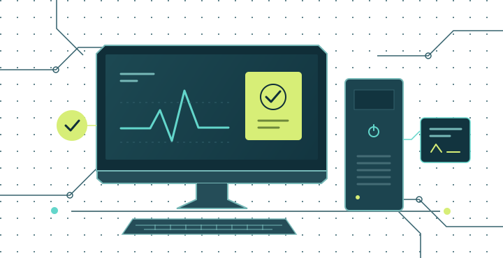

IDENTIDADE VISUAL · VERSÃO 1.0
Evidência que
vira solução.
Uma identidade para quem observa, testa e aprende fazendo. A precisão da bancada encontra a clareza de uma experiência educacional acolhedora.
OBSERVAR → INVESTIGAR → VALIDAR
01 / Uma marca com um método.
Circuito + bancada + verificação
O B de Bancada é construído como uma trilha de circuito. Os terminais remetem a pontos de teste; a verificação traduz a validação do diagnóstico. Os cantos chanfrados lembram uma placa técnica.

Assinatura e proporções
Nome: Operação Bancada.
Endosso: AMC / Aprendizagem em ação.
Assinatura: Evidência que vira solução.
Na interface, use o símbolo a partir de 32 px. O favicon é uma exceção de uso compacto.
- Respiro: reserve ao menos ¼ da altura do símbolo em todos os lados.
- Marca completa: use com largura mínima recomendada de 280 px; abaixo disso, prefira símbolo ou assinatura compacta da interface.
- Consistência: preserve proporções, cores e orientação. Use a versão inversa em fundos escuros.
02 / Cores que organizam a experiência.
#102E38Estrutura, títulos e marca.
#086B66Ações, foco e progresso.
#D7EE77Destaques sobre fundo escuro.
#63D6CBTraços e ilustrações no escuro.
#F3F5EFFundo e descanso visual.
Apoios: branco #FFFFFF · texto secundário #52676C · atenção #805314 sobre #FAF2DF · ação destrutiva #9B4034. Verde de sinal e água de circuito são acentos; não são usados como texto pequeno sobre branco.
03 / Tipografia com leitura e personalidade.
TÍTULOS E ASSINATURA
aprenda a investigar.
Bahnschrift, com Segoe UI e sans-serif como alternativas. Formas diretas e ritmo de leitura inspirado em sinalização técnica.
CONTEÚDO E DADOS
Um teste para sustentar a decisão.
Segoe UI no conteúdo; Cascadia Code ou Consolas em etiquetas e números. Fontes do sistema, com alternativas locais: a oficina continua funcionando offline.
04 / Linguagem visual em uso.
Um laboratório, não um placar.
Cartões claros, linhas finas e indicadores precisos mantêm o foco no raciocínio. O painel escuro abre a narrativa; o verde conduz a ação.
- Ícones: traço simples, pontas arredondadas e sinais de teste, conexão ou validação.
- Formas: cartões com cantos discretos; chanfros reservados ao símbolo.
- Estados: sempre combinar cor, texto e sinal. Atenção pede revisão, sem punir o aluno.
Ilustração de bancada
Traços de circuito, um sinal de diagnóstico e uma estação de trabalho apresentam a missão. A ilustração é decorativa: nenhuma instrução depende dela.

05 / Arquivos para usar nos seus materiais.
Impressos e documentos
Versão de uma cor para roteiros, folhas de atividade e materiais com impressão econômica. Os SVGs têm fundo transparente e podem ser ampliados sem perda de resolução.


Capas e apresentações
Assinatura inversa para fundo azul-petróleo. Os textos dos arquivos SVG permanecem editáveis e podem usar a fonte alternativa disponível no computador.


Clareza para decidir.
Confiança para tentar novamente.
A marca orienta a experiência; a evidência continua sendo o centro da aprendizagem.